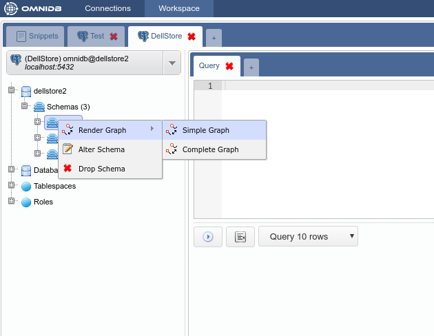
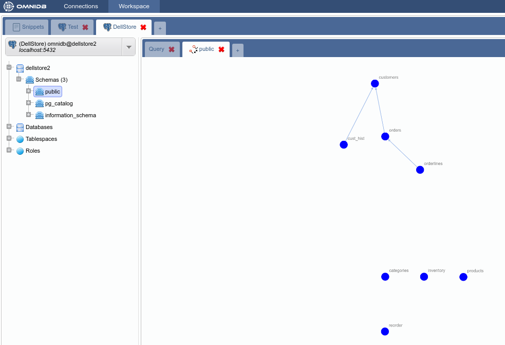

Este recurso exibe um gráfico com nós que representam tabelas e arestas representando os relacionamentos de tabelas com chaves estrangeiras. Usando o mouse, o usuário é capaz de aumentar o zoom, diminuir o zoom e arrastar e soltar nós para mudar sua posição.
Existem dois tipos de gráficos: Simple Graph (Gráfico simples) e Complete Graph (Gráfico completo).
Para acessá-lo, clique com o botão direito do mouse no nó da raiz da árvore e selecione Render Graph > Simple Graph:


Este gráfico exibe tabelas com todas as suas colunas e respectivos tipos de dados. Além disso, as arestas agora são rotuladas com informações sobre a chave estrangeira específica. Para acessá-lo, clique com o botão direito do mouse no nó da raiz da árvore e selecione Render Graph > Complete Graph: